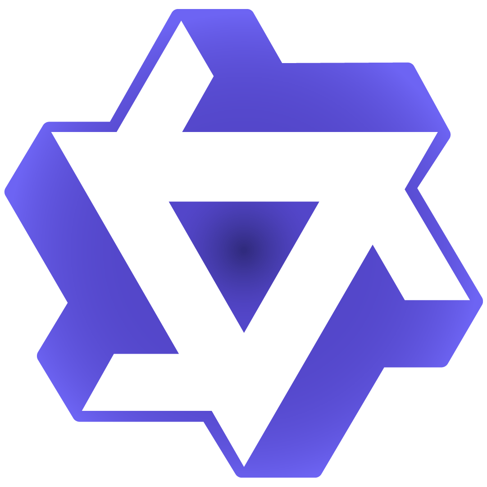

Quantitative Results
EvolveNav achieves state-of-the-art training-free performance on both HM3D and MP3D benchmarks, surpassing prior training-free methods by 1.9% (HM3D) and 4.5% (MP3D) in Success Rate.
| Method | Venue | Training-free | Instruction Interpolator | HM3D | MP3D | |||
|---|---|---|---|---|---|---|---|---|
| Vision | Language | SR ↑ | SPL ↑ | SR ↑ | SPL ↑ | |||
| RIM | IROS'23 | ✗ | – | – | 57.8 | 27.2 | 50.3 | 17.0 |
| OVG-Nav | RAL'24 | ✗ | – | – | – | – | 35.8 | 12.3 |
| VLFM | ICRA'24 | ✗ | BLIP-2 | – | 52.5 | 30.4 | 36.4 | 17.5 |
| PIRLNav | CVPR'23 | ✗ | – | – | 64.1 | 27.1 | – | – |
| XGX | ICRA'24 | ✗ | – | – | 72.9 | 35.7 | – | – |
| ZSON | NeurIPS'22 | ✓ | CLIP | – | 25.5 | 12.6 | 15.3 | 4.8 |
| L3MVN | IROS'23 | ✓ | – | RoBERTa-large | 50.4 | 23.1 | 34.9 | 14.5 |
| PixNav | ICRA'24 | ✓ | LLaMA-Adapter |  GPT-4 GPT-4 |
37.9 | 20.5 | – | – |
| VLFM | ICRA'24 | ✓ | BLIP-2 | – | 50.9 | 23.6 | 32.5 | 15.9 |
| SG-Nav | NeurIPS'24 | ✓ | LLaVA-1.6-7B | GPT-4 |
54.0 | 24.9 | 40.2 | 16.0 |
| OpenFMNav | NAACL-F'24 | ✓ | GPT-4V |
GPT-4 |
54.9 | 24.4 | 37.2 | 15.7 |
| ActPept | RAL'24 | ✓ | GraphSAGE | – | – | – | 39.8 | 17.4 |
| InstructNav | CoRL'24 | ✓ | GPT-4V |
GPT-4 |
58.0 | 20.9 | – | – |
| ApexNav | RAL'25 | ✓ | BLIP-2 |  DeepSeek-V3 DeepSeek-V3 |
59.6 | 33.0 | 39.2 | 17.8 |
| MFNP | ICRA'25 | ✓ |  Qwen-VLChat-Int4 |
Qwen2-7B | 58.3 | 26.7 | 41.1 | 15.4 |
| MSGNav | CVPR'26 | ✓ | GPT-4o |
GPT-4o |
63.0 | 31.4 | – | – |
| ASCENT | RAL'26 | ✓ | BLIP-2 | Qwen2.5-7B | 65.4 | 33.5 | 44.5 | 15.5 |
| EvolveNav (Ours) | – | ✓ | BLIP-2 | Qwen3-8B | 67.3 | 33.9 | 49.0 | 19.1 |
| # | Module | HM3D | MP3D | |||
|---|---|---|---|---|---|---|
| Preflection | Memory-Evolve | SR ↑ | SPL ↑ | SR ↑ | SPL ↑ | |
| 1 | – | – | 64.7 | 32.5 | 43.9 | 15.8 |
| 2 | ✓ | – | 66.5 | 33.5 | 47.4 | 18.4 |
| 3 | – | ✓ | 66.7 | 33.6 | 48.3 | 18.7 |
| 4 | ✓ | ✓ | 67.3 | 33.9 | 49.0 | 19.1 |
| Instruction Interpolator | HM3D | MP3D | |||
|---|---|---|---|---|---|
| Vision | Language | SR ↑ | SPL ↑ | SR ↑ | SPL ↑ |
| BLIP-2 | Qwen2.5-7B | 67.0 | 33.9 | 48.8 | 19.0 |
| Qwen3-8B | 67.3 | 33.9 | 49.0 | 19.1 | |
| Qwen3.5-9B | 67.2 | 34.1 | 48.9 | 19.2 | |